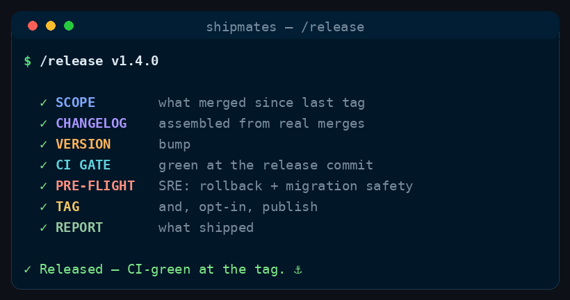

Command
/release
changelog → CI-green tag → (opt-in) publish
Cut a release safely — assemble the changelog from what actually merged, bump the version, gate on green CI at the tag, run an SRE pre-flight (rollback + migration safety), then tag and (opt-in) publish.
See it run

/release runs, in order.How to run it
Run it in your harness
/release [version — e.g. v1.4.0, or "patch"/"minor"/"major" to derive it]<angle brackets> = required · [square brackets] = optional
Step by step
The stages
Seven stages, in order. One is a hard gate — the run stops there until it passes.
Cost discipline
- Stable workflow instructions come before runtime input. Read and parse the complete runtime-input section at the end before acting; do not weave volatile issue text, arguments, diffs, or generated output through this prefix.
- Spend subagent seats only where their decision can change the outcome. Route model and effort at spawn by work difficulty; never hardcode a model in canonical content.
- Ask every subagent for a compact structured return: decision/status first, criterion findings and minimal evidence, then blockers, changed files with one-line rationale, and next action as relevant. Return decisions, not transcripts or raw logs.
Turn "what's merged since the last release" into a clean, reversible release. The technical-writer builds the changelog from the real merge history (every user-visible change covered), the version is bumped consistently, and it's gated on green CI at the exact commit being tagged plus an SRE pre-flight for rollback and migration safety. Publishing is opt-in.
The requested version comes from the Runtime input section at the end of this workflow.
-
Stage 0 — Determine scope
Find the last release tag (
git describe --tags --abbrev=0/gh release list) and collect everything merged since — PRs and commits (git log <lasttag>..HEAD,gh pr list --state merged --base <default>). Derive/confirm the next version from the nature of those changes (breaking/feature/fix → semver). -
Stage 1 — Changelog
Crew:
technical-writerSpawn the
technical-writerto draft release notes from the actual merged changes — grouped (Added / Changed / Fixed / Removed / Security), written for the reader, every user-visible change covered, and breaking changes called out with the upgrade path. It writes to the repo's changelog format. Cross-check: no merged user-facing PR is missing from the notes. -
Stage 2 — Version bump
Update every
VERSION_FILESentry (and lockfiles that pin the version) to the new version, consistently. Confirm nothing still references the old version where it matters. -
Stage 3 — CI gate at the release commit
Gate: HARD GATE
Commit the changelog + bump, push, and wait for CI to go green on that exact commit — the one that will be tagged (poll
gh pr checks/gh run list, don't guess; run the build/tests the repo defines). A tag on red is never created. If red, pull the failure log, fix, re-push, re-poll (bounded), or escalate. -
Stage 4 — SRE pre-flight
Crew:
site-reliability-engineerBefore tagging, spawn the
site-reliability-engineerto confirm the release is safe to roll out and to roll back: any DB/data migrations are backward-compatible (expand/contract, not destructive-in-place), there's a rollback path, config/secrets needed by the new version are documented, and no change silently breaks a running deployment. A one-way, unrecoverable release is a blocking finding unless justified. -
Stage 5 — Tag & (opt-in) publish
PUBLISH_MODE=manual: create the annotated tag candidate / draft release with the notes, and hand the user the exact publish command + the green-CI link. Stop.PUBLISH_MODE=auto:git tag/push the tag andgh release create <version>with the notes (and any built artifacts), only after Stages 3–4 pass.
-
Stage 6 — Report
Version, the changelog, the green-CI link, the SRE pre-flight verdict, tag/release state (and the publish command if manual), plus any human follow-ups (secret/config changes, migration ordering, announcement).
Runtime input
$ARGUMENTS contains the requested version or bump keyword. If empty, infer the bump from the change set and propose it.
Config
PUBLISH_MODE=manual(default: prepare the release — changelog, bump, tag candidate — and stop for a human to publish) orauto(create the tag/GitHub release once every gate passes). Opt intoautoonly where unattended releases are acceptable.VERSION_FILES= wherever the repo records its version (package.json,pyproject.toml,Cargo.toml,VERSION, etc.) — discover them; keep them consistent.- Versioning & changelog conventions = the repo's own (SemVer + Keep a Changelog unless it says otherwise; honour an existing CHANGELOG format and any release checklist in CONTRIBUTING).
- Orchestrator owns all git/gh; reuse session commit trailers.
Guardrails
- The tag is only ever on a green commit — CI at the release SHA is the gate, not "it worked on main earlier."
- The changelog reflects what actually merged — no invented entries, no missing user-facing changes; breaking changes always carry the upgrade path.
- Version is consistent across every file that records it.
- Reversibility is a release requirement: no rollback / destructive migration is a blocker to justify or fix.
- Respect
PUBLISH_MODE— never publish unattended unless explicitly set toauto. - If a role doesn't resolve to an
.claude/agents/*.md, fall back togeneral-purposewith the brief inlined and note it.
Where this lives
This page is generated from commands/release.md. The installer copies it to ~/.claude/skills/release/SKILL.md for every project, or .claude/skills/release/SKILL.md inside a single repo.